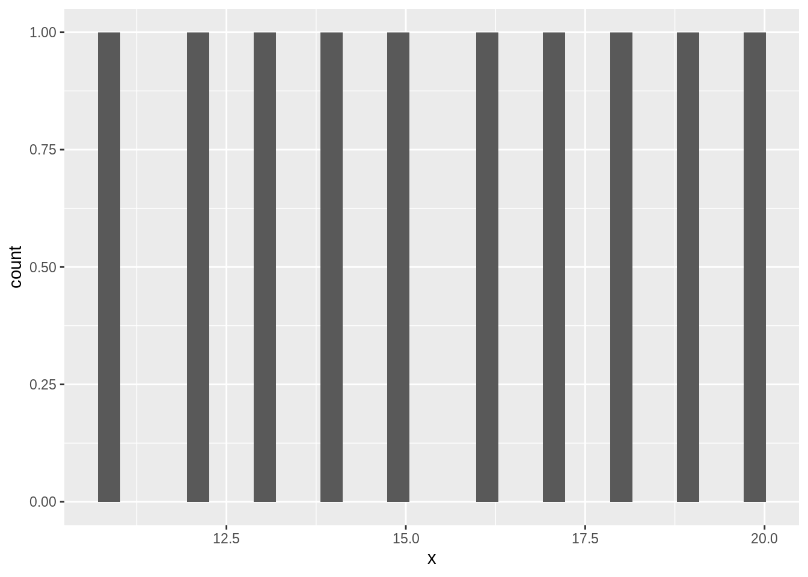
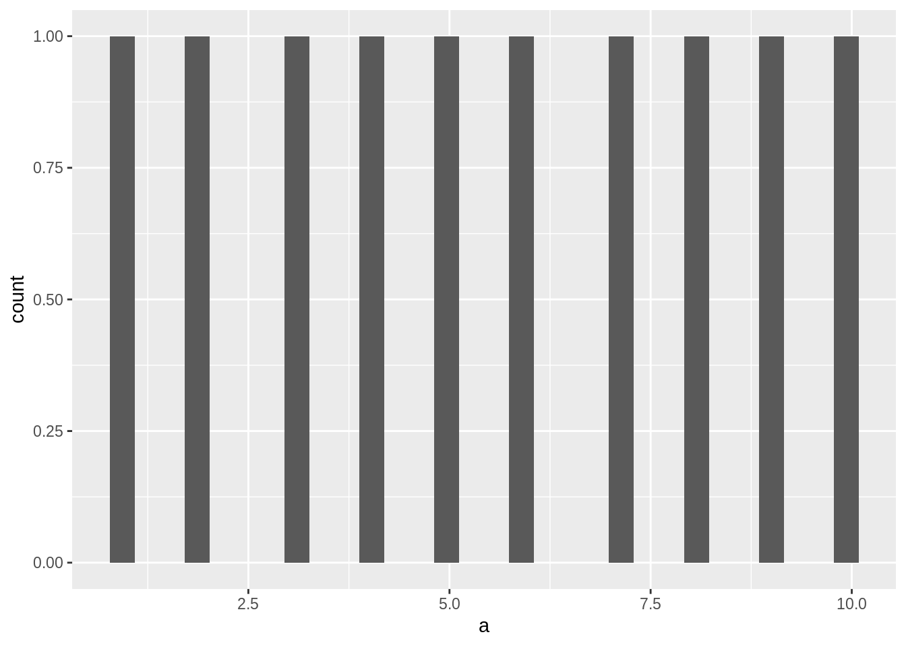

7 Tidy evaluation
writing functions that work with datasets of different shape
This chapter offers an introduction to tidy evaluation.
7.1 A custom plotting function
Click here to show setup code.
library(tidyverse)
library(rlang)Knowledge of tidy evaluation can become necessary when creating own functions in the framework of the tidyverse.
Let’s try to build a function that takes a data frame and an unquoted column name and produces a histogram from this column. A naive approach would be the following function definition:
tidy_histogram <- function(.data, x) {
.data %>%
ggplot(aes(x = x)) +
geom_histogram()
}Let’s test this function in an easy setting:
data <- tibble(a = 1:10)
try(print(
data %>%
tidy_histogram(a)
))## Error in FUN(X[[i]], ...) : object 'a' not foundtry(print(
data %>%
tidy_histogram("a")
))
## Error : StatBin requires a continuous x variable: the x variable is discrete. Perhaps you want stat="count"?Neither the first nor the second attempt worked. What went wrong?
If we add another column called x, it suddenly works:
data <- tibble(a = 1:10, x = 11:20)
data %>%
tidy_histogram(a)## `stat_bin()` using `bins = 30`. Pick better value with `binwidth`.
The reason for it is, that our function is hard-coded to display a variable called x.
The problem lies in the code-snippet aes(x = x).
In the tidyverse the solution for avoiding these ambiguities is by using expressions to capture the meaning (here: user input) of an unquoted variable and subsequently the bang-bang-operator (written in the code as !!; also called “unquote”) to access/pass on this meaning at the right place.
In our example we do the following:
tidy_histogram <- function(.data, x) {
# Treat the argument as a variable name
expr <- enquo(x)
.data %>%
# Tell ggplot2 that expr *contains* the name of the variable,
# instead of expecting a variable named `expr`
ggplot(aes(x = !!expr)) +
geom_histogram()
}
data %>%
tidy_histogram(a)## `stat_bin()` using `bins = 30`. Pick better value with `binwidth`.
data %>%
tidy_histogram(x)## `stat_bin()` using `bins = 30`. Pick better value with `binwidth`.try(print(
data %>%
tidy_histogram(y)
))
## Error in FUN(X[[i]], ...) : object 'y' not foundBut this behavior is different from our usual base-R usage of variables in functions.
How do some functions behave this way and others another way?
Let’s have a look at how the ‘problematic’ tidyverse function aes() is implemented:
aes## function (x, y, ...)
## {
## exprs <- rlang::enquos(x = x, y = y, ...)
## is_missing <- vapply(exprs, rlang::quo_is_missing, logical(1))
## aes <- new_aes(exprs[!is_missing], env = parent.frame())
## rename_aes(aes)
## }
## <bytecode: 0x47e7ca8>
## <environment: namespace:ggplot2>The reason for the behavior seen above is that the function itself makes use of capturing user input as an expression.
In this case it uses the function enquos(), which captures one or more expressions along with an unique identifier for the environment in which they are supposed to be evaluated eventually.
The default is to evaluate an expression (“standard evaluation”).
With enquo() and enquos() the expressions that correspond to user input are captured.
As an example of a newly-built function in the tidyverse, here is a function that combines the functionalities of dplyr::mutate() and purrr::map_dbl().
It takes as arguments a data frame, the column it is supposed to act upon and the function call it is supposed to use on each of the columns values:
mutate_map_dbl <- function(.data, col, expr) {
quo <- enquo(col)
.data %>%
mutate(new_column = map_dbl(!!quo, expr))
}
iris_nested <-
iris %>%
nest(-Species)
iris_nested %>%
mutate_map_dbl(data, ~ mean(.$Petal.Width))## # A tibble: 3 x 3
## Species data new_column
## <fct> <list> <dbl>
## 1 setosa <tibble [50 × 4]> 0.246
## 2 versicolor <tibble [50 × 4]> 1.33
## 3 virginica <tibble [50 × 4]> 2.03
7.2 Do you need tidy evaluation?
Click here to show setup code.
library(tidyverse)So does everyone who wants to create any functions in the framework of the tidyverse need deep knowledge about tidy evaluation?
The answer is, it depends: often enough, things “just work”.
In the following example, which is a slight extension of dplyr::summarize(), you do not need to capture any expressions.
The function takes a data frame and an ellipsis.
And the ellipsis can be directly passed on to a tidyverse function (buzzphrase: “pass the dots”).
summarize_ungroup <- function(.data, ...) {
.data %>%
summarize(...) %>%
ungroup()
}The function does what it promised to do:
mean_airtime_per_day <-
nycflights13::flights %>%
group_by(year, month, day) %>%
summarize_ungroup(mean(air_time, na.rm = TRUE))
mean_airtime_per_day## # A tibble: 365 x 4
## year month day `mean(air_time, na.rm = TRUE)`
## <int> <int> <int> <dbl>
## 1 2013 1 1 170.
## 2 2013 1 2 162.
## 3 2013 1 3 157.
## # … with 362 more rows
mean_airtime_per_day %>%
groups()## NULL7.3 Explicit quote-unquote of ellipsis
Click here to show setup code.
library(tidyverse)
library(rlang)There are cases though, when you need knowledge about what the user added to the ellipsis.
This is then handled by capturing the content in a list of quosures, which can be unquoted by the !!!-operator.
You need the “triple-bang” operator here, because the ellipsis can hold more than one expression.
!!! does two things: it unquotes the content and splices it into the current call.
We can practice this with our little new tidyverse function summarize_ungroup():
summarize_ungroup <- function(.data, ...) {
# Capture (quote) with enquos()
quos <- enquos(...)
# Use (unquote-splice) with !!!
.data %>%
summarize(!!!quos) %>%
ungroup()
}We didn’t need to process the content, but it still works, as we can see here:
mean_airtime_per_day <-
nycflights13::flights %>%
group_by(year, month, day) %>%
summarize_ungroup(mean(air_time, na.rm = TRUE))
mean_airtime_per_day## # A tibble: 365 x 4
## year month day `mean(air_time, na.rm = TRUE)`
## <int> <int> <int> <dbl>
## 1 2013 1 1 170.
## 2 2013 1 2 162.
## 3 2013 1 3 157.
## # … with 362 more rows
mean_airtime_per_day %>%
groups()## NULLTo come back to our original example: aes() uses exactly this “quote-unquote-splice”-pattern:
aes## function (x, y, ...)
## {
## exprs <- rlang::enquos(x = x, y = y, ...)
## is_missing <- vapply(exprs, rlang::quo_is_missing, logical(1))
## aes <- new_aes(exprs[!is_missing], env = parent.frame())
## rename_aes(aes)
## }
## <bytecode: 0x47e7ca8>
## <environment: namespace:ggplot2>At the time of producing the material for this course, summarize() did not make use of this pattern.
7.4 Names
Click here to show setup code.
library(tidyverse)
library(rlang)User input in an ellipsis can be named or unnamed. We can distinguish between those two kinds and make use of this distinction, in the following way creating a special interface for the function:
gsu <- function(.data, ...) {
# Capture (quote) with enquos()
quos <- enquos(...)
is_named <- (names2(quos) != "")
named_quos <- quos[is_named]
unnamed_quos <- quos[!is_named]
# Use (unquote-splice) with !!!
.data %>%
group_by(!!!unnamed_quos) %>%
summarize(!!!named_quos) %>%
ungroup()
}The named_quos are our summary columns (name is name of the new column, value is the expression to be used on the input column(s)) and the unnamed_quos are now the grouping columns:
mean_airtime_per_day <-
nycflights13::flights %>%
gsu(year, month, day, mean_air_time = mean(air_time, na.rm = TRUE))
mean_airtime_per_day## # A tibble: 365 x 4
## year month day mean_air_time
## <int> <int> <int> <dbl>
## 1 2013 1 1 170.
## 2 2013 1 2 162.
## 3 2013 1 3 157.
## # … with 362 more rows
7.5 Debugging
Click here to show setup code.
library(rlang)You can use the capturing functions (creating quosures or expressions) also outside of functions:
quos(x = a)## $x
## <quosure>
## expr: ^a
## env: 0x2f0dc30
a <- sym("b")
x_quos <- quos(x = !!a)
x_quos## $x
## <quosure>
## expr: ^b
## env: 0x2f0dc30
The sym() function here creates a so-called symbol from a character variable.
Unquoting a symbol variable means that the symbol is interpreted as a variable in the dataset.
Capturing expressions in quosures can help you understand what is happening behind the scenes and for example give you clues as to why your code is not doing what it is supposed to do.
Quosures can also be nested:
quos(y = c, !!!x_quos)## $y
## <quosure>
## expr: ^c
## env: 0x2f0dc30
##
## $x
## <quosure>
## expr: ^b
## env: 0x2f0dc30
7.6 Argument names
Click here to show setup code.
library(tidyverse)
library(rlang)At the end of section A custom plotting function we defined a function mutate_map_dbl().
A downside of this function was, that it did create the desired new column, but you weren’t able to specify the column name in the function call.
Let’s try to improve this aspect of the function:
mutate_map_dbl <- function(.data, col, ...) {
quos <- build_quos(!!enquo(col), ...)
.data %>%
mutate(!!!quos)
}
build_quos <- function(col, ...) {
args <- list(...)
stopifnot(length(args) == 1)
expr <- args[[1]]
map_quo <- build_map_quo(!!enquo(col), expr)
set_names(list(map_quo), names(args))
}
build_map_quo <- function(col, expr) {
quo <- enquo(col)
quo(map_dbl(!!quo, expr))
}Again, like in section Names we are able to make use of the fact that an expression in an ellipsis of sorts x = y is treated in a way, that x is the name and y is the value of an object (here we used this in the code snippet names(args)).
A lot of things happen here:
1. the main function mutate_map_dbl() calls a helper function build_quos()
2. build_quos() in turn calls a helper’s helper function build_map_quo()
3. mutate_map_dbl() then uses the output of the nested function calls to (hopefully) produce the desired result.
What output do the two helper functions produce? Let’s test it:
build_quos(data, mean_petal_width = ~ mean(.$Petal.Width))## $mean_petal_width
## <quosure>
## expr: ^map_dbl(^data, expr)
## env: 0xa0aeda0
build_map_quo(mean_petal_width, ~ mean(.$Petal.Width))## <quosure>
## expr: ^map_dbl(^mean_petal_width, expr)
## env: 0x9635558
And finally, let’s see if our function lives up to our expectations:
iris %>%
nest(-Species) %>%
mutate_map_dbl(data, mean_petal_width = ~ mean(.$Petal.Width))## # A tibble: 3 x 3
## Species data mean_petal_width
## <fct> <list> <dbl>
## 1 setosa <tibble [50 × 4]> 0.246
## 2 versicolor <tibble [50 × 4]> 1.33
## 3 virginica <tibble [50 × 4]> 2.03
7.7 purrr-style mappers
Click here to show setup code.
library(tidyverse)
library(rlang)
mutate_map_dbl <- function(.data, col, ...) {
quos <- build_quos(!!enquo(col), ...)
.data %>%
mutate(!!!quos)
}Is there still potential to improve our function mutate_map_dbl()?
We start here with only the highest level function definition of mutate_map_dbl() from section Argument names, i.e. without the definition of its helper functions build_quos() and build_map_quo().
What we are trying to achieve now, is to rid ourselves from the need to provide the tilde before the function. This is a slightly more tricky task, and here is how to go about it:
build_quos <- function(col, ...) {
args <- enquos(...)
stopifnot(length(args) == 1)
expr <- args[[1]]
map_quo <- build_map_quo(!!enquo(col), !!expr)
set_names(list(map_quo), names(args))
}
build_map_quo <- function(col, expr) {
quo <- enquo(col)
mapper <- as_mapper_quosure(!!enquo(expr))
quo(map_dbl(!!quo, !!mapper))
}
as_mapper_quosure <- function(expr) {
quo <- enquo(expr)
rlang::new_function(alist(... = , . = ..1, .x = ..1, .y = ..2), quo_get_expr(quo))
}We needed to add one more level in the hierarchy of function calling.
The helper function as_mapper_quosure() creates a new function with the help of rlang::new_function(), which eventually makes it possible to leave out the tilde.
as_mapper(~ mean(.$Petal.Width))## <lambda>
## function (..., .x = ..1, .y = ..2, . = ..1)
## mean(.$Petal.Width)
## <environment: 0x2f0dc30>
## attr(,"class")
## [1] "rlang_lambda_function"as_mapper_quosure(mean(.$Petal.Width))## function (..., . = ..1, .x = ..1, .y = ..2)
## mean(.$Petal.Width)
## <environment: 0x97f7c48>build_map_quo(mean_petal_width, mean(.$Petal.Width))## <quosure>
## expr: ^map_dbl(^mean_petal_width, <function(..., . = ..1, .x = ..1,
## .y = ..2) mean(.$Petal.Width)>)
## env: 0x8e68880
We see that our function as_mapper_quosure() is closely related to the function purrr::as_mapper(), but produces a quosure of a proper function and not a lambda function.
Also, it does not require the tilde.
So much to the theory, but does our main function also still behave in the right way?
iris %>%
nest(-Species) %>%
mutate_map_dbl(data, mean_petal_width = mean(.$Petal.Width))## # A tibble: 3 x 3
## Species data mean_petal_width
## <fct> <list> <dbl>
## 1 setosa <tibble [50 × 4]> 0.246
## 2 versicolor <tibble [50 × 4]> 1.33
## 3 virginica <tibble [50 × 4]> 2.03